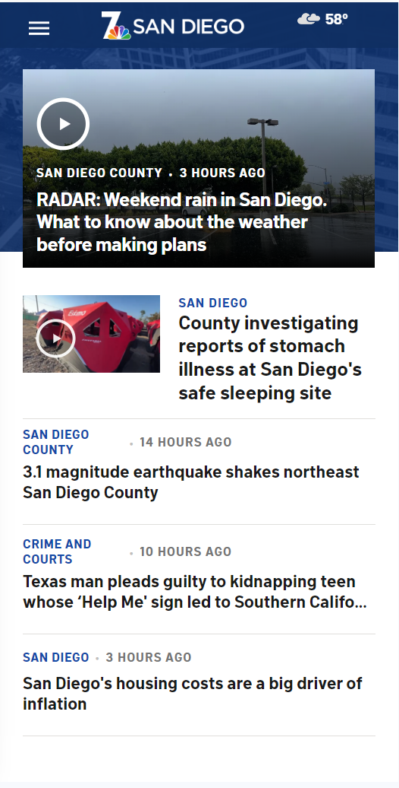

PARC Proximity
Booking
Booking.com
In the PARC system for proximity that emphasizes the object organization of related elements that are in close relationship to increase the conhesion. Web pages that follow the principle could be easily detected because of the grouping alike items like links, buttons. Therefore that spatial closeness returns a clear relationship between the elements helping the user recognize patterns and making a real experience.
Visual Hierarchy
San Diego News
SanDiegoNews.com Visual Hierarchy is the necessary base principle that leads users through a webpage interface by prioritizing and enhancing certain elements. The web pages that follow this principle could be identified with a strategic use of font size, color and placement to capture the attention. Headings, action buttons and main content are designed to stand out creating a clear hierarchy that gives users guidance in the desired direction for interaction.
PARC Alignment
Vogue
Vogue.comAlignment by the desing principle PARC focuses on elements that should have a visual connection to have an orderly layout. Webpages that adhere to alignment principles present a consistent and intentional order of text, images and any other components. This gives an organized look, making it easy to read and being visually appealing. The strategy to the alignment allows to have a well done design that transmits professional as well as show they pay attention to details.